Создание опроса
Конструктор форм
Приступим к созданию самого опроса. В Google Forms есть возможность не только создавать вопросы, а и вставлять изображения, видео и делить форму на разделы. Сделать это можно при помощи панели инструментов, которая находится справа от блока с вопросом:
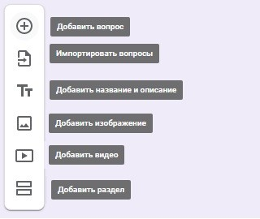Пункт меню “Импортировать вопросы” позволяет повторно использовать вопросы из ранее созданных форм, причем вы можете выбрать, какие именно вопросы перенести. Это удобно для тех, кто часто работает с Google Forms.
Добавить изображение можно прямо с устройства, с камеры, по ссылке, с Google Диска или через поиск Google. Видео встраиваются с YouTube: вы можете указать ссылку либо найти видео на данной платформе, не покидая своей формы.
Добавление разделов удобно использовать, если опрос получается слишком длинным или содержит вопросы, которые можно объединить в одну тему. Длинный опрос, разбитый на разделы, визуально воспринимается проще. Вы можете добавить название и краткое описание для каждого раздела, а также копировать разделы для создания похожих.
В конструкторе форм у каждого блока есть общие элементы, которые встречаются в любом вопросе:
- поле для вопроса;
- поле для описания (по умолчанию скрыто, но можно добавить при помощи меню в виде трех вертикальных точек в правом нижнем углу);
- кнопка для загрузки изображения;
- меню для выбора типа вопроса;
- кнопки “Сделать копию” и “Удалить”;
- опция “Обязательный вопрос” (не ответив на данный вопрос, респондент не сможет отправить форму);
- меню с дополнительными функциями в зависимости от типа вопроса.
Типы вопросов
Google Forms предлагает различные типы вопросов в зависимости от того, какие ответы вы желаете получить от вашей аудитории:
- краткие;
- развернутые;
- выбрать один вариант из предложенных;
- выбрать несколько вариантов и т. д.
Для выбора типа ответа щелкните раскрывающееся меню рядом с полем вопроса:
.gif)
Текст (строка)
Удобно использовать для коротких ответов в нескольких словах: узнать имя, возраст, адрес, емейл, получить ссылку на профиль в соцсетях и т.п.
Чтобы ответ был релевантным, и вместо ответа на числовой вопрос пользователь не вводил, например, случайные буквы, можно установить правила с проверкой ввода данных. Для этого щелкните пиктограмму с тремя точками в правом нижнем углу блока с вопросом и выберите опцию “Проверка ответов”.

Текст (абзац)
Этот тип аналогичен предыдущему, но предполагает более подробный ответ из одного или нескольких абзацев. Подходит для случаев, когда пользователю нужно описать свое мнение или рассказать ситуацию.
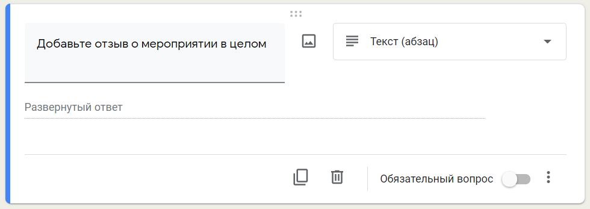Один из списка
Респондент может выбрать один из предлагаемых вариантов или вписать свой в текстовом поле. Этот тип ответа дает возможность перенаправить респондента в определенный раздел опроса в зависимости от выбранного им варианта. Для этого нужно нажать на значок "Ещё" в правом нижнем углу и выбрать пункт "Выбрать действие для каждого ответа":

После этого станет доступен выбор возможных переходов в зависимости от ответа пользователя: он может быть перенаправлен в другой раздел формы либо после определенного ответа опрос будет завершен, а форма отправлена:
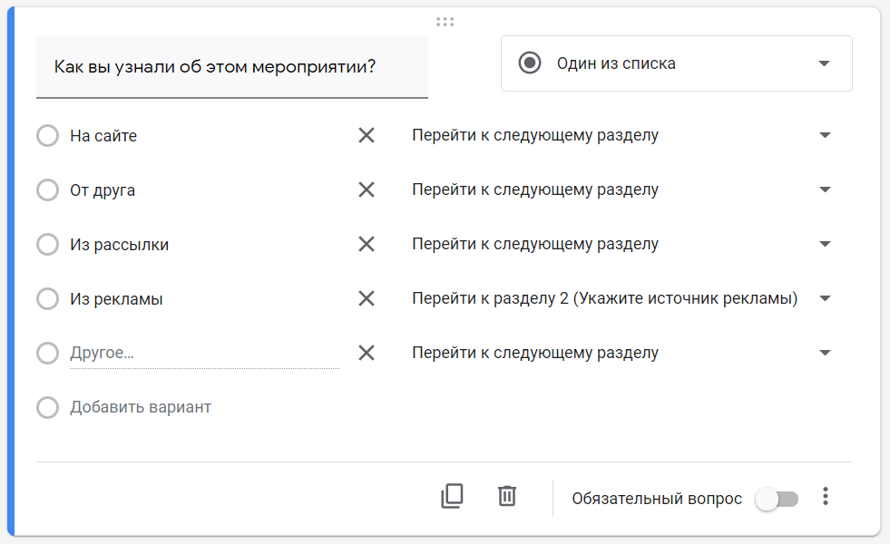Для этого типа ответа также доступна опция “Перемешать ответы”: при каждом открытии формы варианты ответов будут меняться местами.
Если в настройках Google Формы вы отметили, что это тест, в блоке с этим типом вопроса вам будет доступна дополнительная настройка ответов:
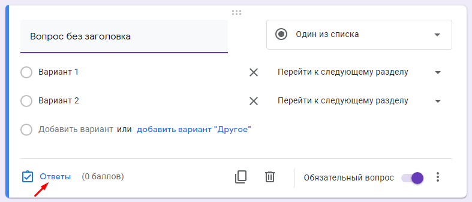Здесь есть возможность указать правильный вариант ответа, а также количество баллов за верный ответ и добавить пояснение: как для правильных ответов, так и для неправильных.
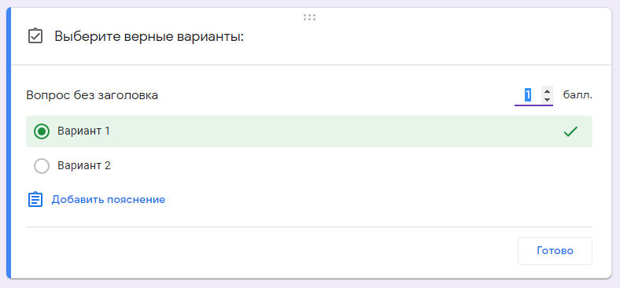Несколько из списка
У респондента есть возможность выбрать несколько вариантов из предложенных, в том числе вариант "Другое" для короткого текстового ответа.
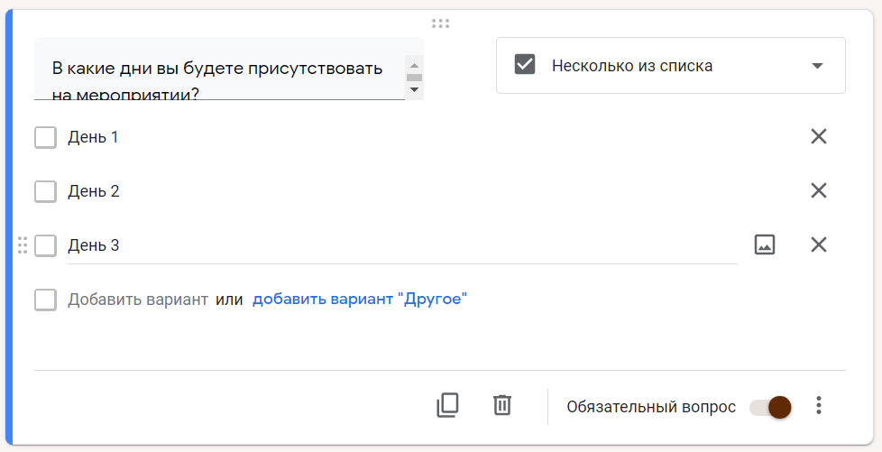При тестировании для такого типа вопроса доступна функция “Проверка ответов”. Здесь можно выбрать количество правильных вариантов и текст, который будет показан как сообщение об ошибке.
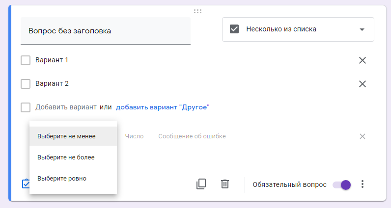Раскрывающийся список
Как и “Один из списка”, предполагает выбор одного из предложенных вариантов, но в данном случае они представлены в виде раскрывающегося меню. Такой вариант удобен, когда вариантов ответов слишком много: раскрывающееся меню смотрится более компактно.
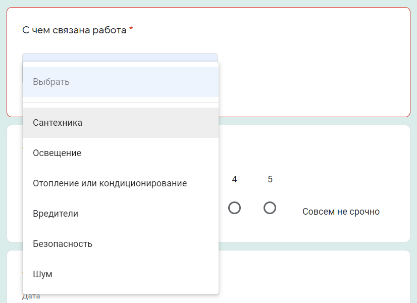Функции для этого варианта ответа аналогичны выбору одного из списка:
- перенаправить респондента к следующей группе вопросов в зависимости от его ответа;
- выводить ответы в случайном порядке при новом открытии формы;
- задать правильный ответ и пояснения.
Загрузка файлов
Позволяет респонденту загружать в качестве ответа собственные файлы. Тип и максимальный размер файла вы можете задать в настройках.
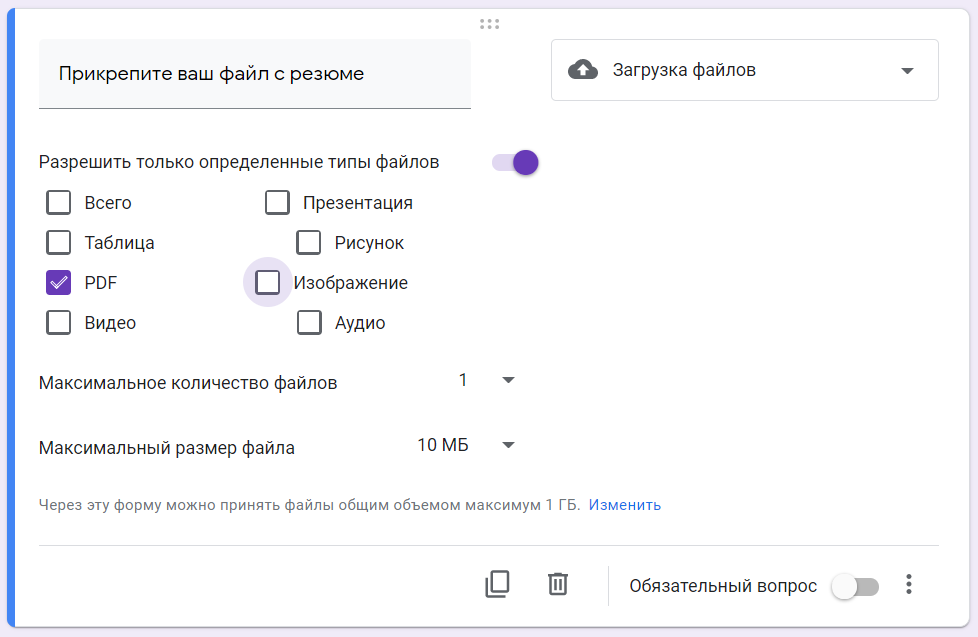При создании блока с таким типом ответа нужно учесть следующие особенности:
- чтобы загрузить свой файл, пользователь должен авторизоваться в своем Google-аккаунте;
- загружаемые файлы используют пространство Google Диска владельца опроса;
- данный тип вопроса невозможно использовать, если гугл опросник хранится на общем диске или включена функция "Защита от потери данных".
Технически возможно, чтобы файлы смогли загружать пользователи и без использования учетной записи, но в таком случае необходимо будет использовать дополнительные скрипты Google.
Шкала
Вариант, который отлично подходит для оценивания какого-либо показателя. Респонденту предлагается выбрать оценку в определенном числовом диапазоне. Вы можете установить метки от 0 до 1 для начала и от 2 до 10 для конца шкалы, а также задать подписи для начала и конца шкалы, например, в виде эмоджи.
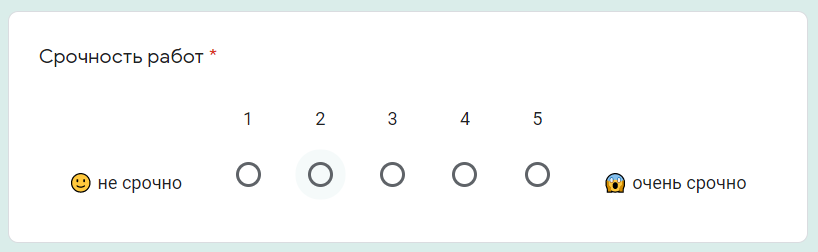Такую шкалу также удобно использовать для определения NPS - индекса лояльности потребителей. Чтобы выявить уровень удовлетворенности клиентов, им предлагается оценить компанию, товар или услугу по 10-балльной шкале. В зависимости от ответов, можно выделить условные группы покупателей и разработать стратегию взаимодействия с ними.
Сетка (множественный выбор)
У респондента есть возможность оценить различные параметры по предложенной шкале. При данном типе вопроса создается сетка, в которой можно выбрать один ответ для каждой строки. Дополнительные функции предлагают возможность ограничить ответы одним выбором для каждого столбца, требовать заполнение всех строк и перемешать строки.
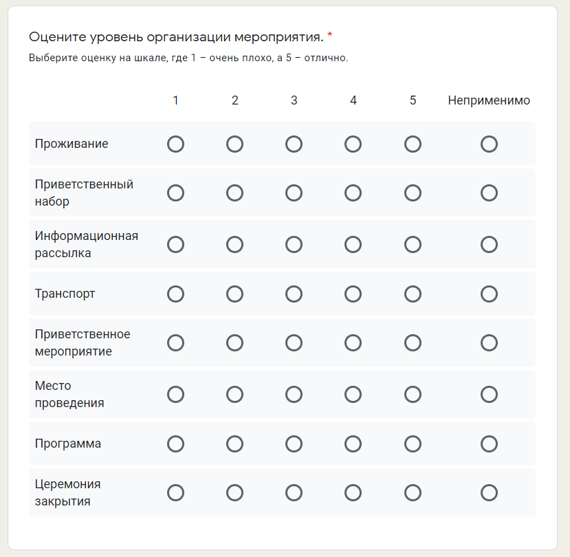Сетка флажков
Респондент оценивает разные параметры по нескольким критериям. Тип ответа аналогичен предыдущему, но при этом есть возможность выбрать один или несколько предложенных вариантов из строки.
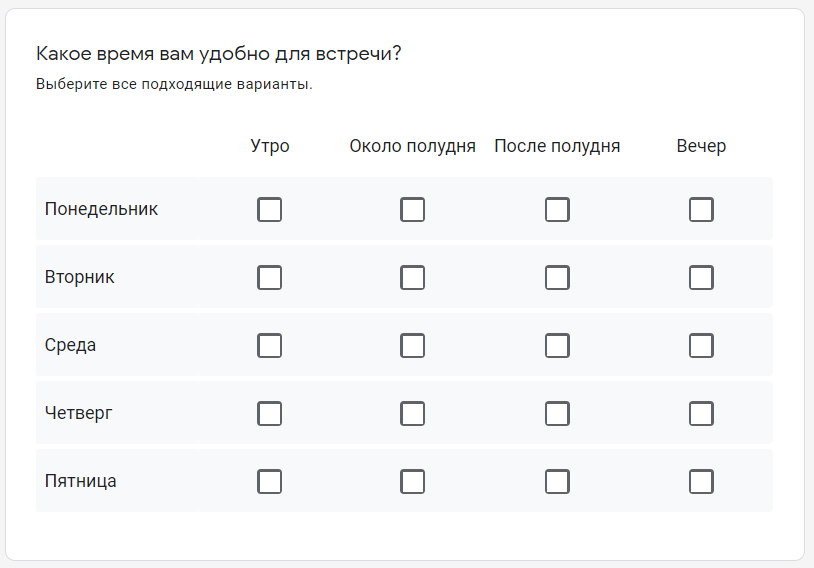По аналогии с типом “Сетка” (множественный выбор), есть функции для ограничения ответов одним выбором для каждого столбца и перемешиванием строк.
Дата
Респонденту предлагается выбрать дату из календаря. При необходимости можно включить выбор года или добавить время в настройках.
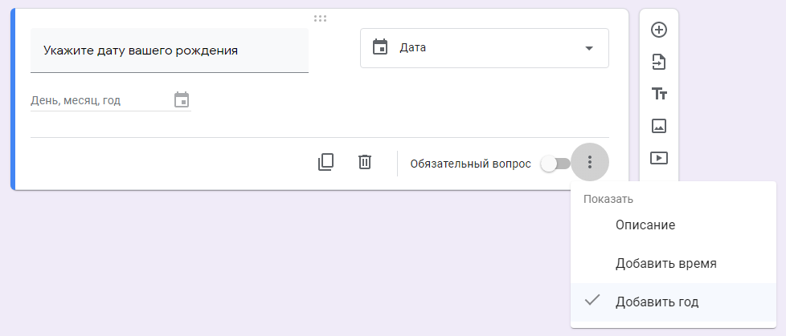Время
Респондент может ввести значение времени в часах и минутах, либо указать продолжительность в часах, минутах, секундах. Выбрать нужный вариант можно в меню "Ещё" в правом нижнем углу. Этот тип ответа удобно использовать, например, при почасовом бронировании, уточнении времени встречи, доставки и т.д.
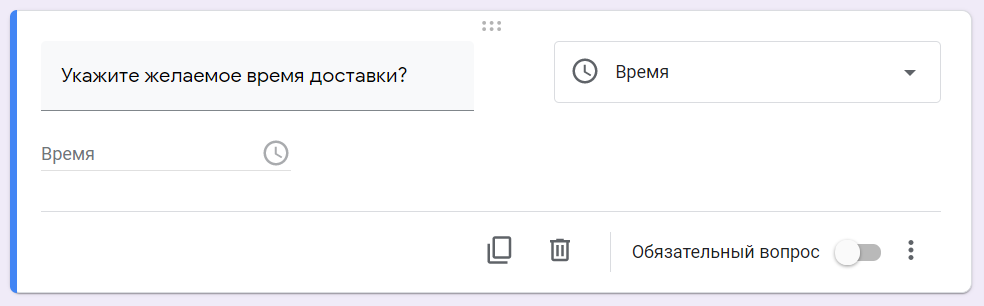Создание и редактирование форм в конструкторе сделано удобно для пользователя: можно как продумать последовательность разделов и вопросов заранее, так и упорядочить их в процессе создания. Любой элемент формы – раздел, вопрос, изображение или видео – можно легко переместить, потянув за шесть точек вверху блока. Возможность копирования значительно упрощает добавление похожих разделов и вопросов в вашу форму, а отменить нежелательное действие можно привычными сочетаниями клавиш CMD+Z или Ctrl+Z.
Кроме этого, как и во всех приложениях офисного пакета Google, вы можете сотрудничать в формах с другими соавторами. Для этого перейдите в дополнительные настройки в правом верхнем углу и выберите пункт “Настройки доступа”. Здесь вы можете указать редакторов из списка электронных адресов, а также возможность изменять разрешения и параметры доступа.
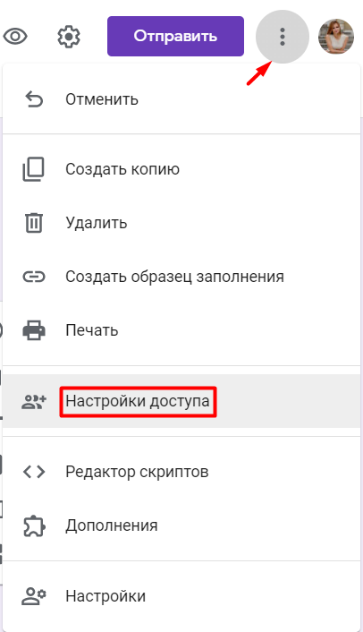